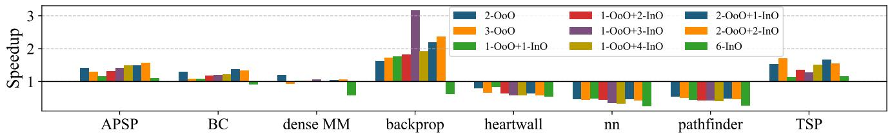
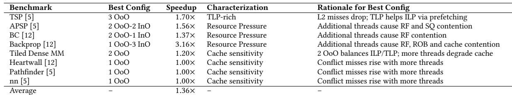
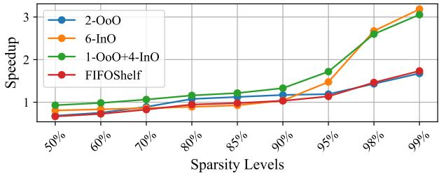
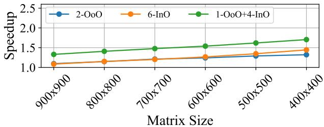
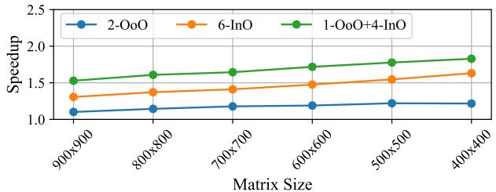

SHADOW: Simultaneous Multi-Threading Architecture with Asymmetric Threads 图表详解¶
Figure 1: SHADOW dynamically redistributes work as IPC changes.High ILP skews execution toward the OoO thread, while a low IPC distributes the work more evenly. SHADOW adapts to the application without software intervention.¶

- 图片展示了 SHADOW 架构在不同稀疏度（70% 和 98%）下，OoO 线程与多个 InO 线程的 IPC 贡献比例及工作负载分配情况，直观体现其动态适应能力。
- 左侧为 70% 稀疏度场景：
- IPC 分布：OoO:Tid0 占比约 35%，四个 InO 线程（Tid1–Tid4）合计占比约 65%，其中 Tid1 和 Tid2 各占约 20%，Tid3 和 Tid4 各占约 12.5%。
- 工作分配：OoO:Tid0 执行约 50% 的工作量，InO 线程平均分担剩余 50%，表明此时 ILP 较高，OoO 线程仍主导执行。
- 右侧为 98% 稀疏度场景：
- IPC 分布：OoO:Tid0 占比降至约 25%，四个 InO 线程合计占比提升至 75%，各线程贡献更均衡（Tid1–Tid4 各约 18.75%）。
- 工作分配：OoO:Tid0 仅执行约 25% 的工作，其余 75% 由四个 InO 线程均分，反映高稀疏度下 ILP 极低，系统自动将负载转移至轻量级 InO 线程。
- 关键结论：
- 随着稀疏度增加，ILP 下降、TLP 上升，SHADOW 自动调整资源分配，无需软件干预。
- OoO 线程在低稀疏度时高效利用 ILP，而在高稀疏度时让出执行权，避免因内存停顿导致的资源浪费。
- InO 线程在高稀疏度下承担主要负载，因其无重命名和推测开销，能持续推进工作，维持整体吞吐。
| 稀疏度 | 线程类型 | IPC 占比 | 工作分配占比 |
|---|---|---|---|
| 70% | OoO:Tid0 | ~35% | ~50% |
| InO:Tid1 | ~20% | ~12.5% | |
| InO:Tid2 | ~20% | ~12.5% | |
| InO:Tid3 | ~12.5% | ~12.5% | |
| InO:Tid4 | ~12.5% | ~12.5% | |
| 98% | OoO:Tid0 | ~25% | ~25% |
| InO:Tid1 | ~18.75% | ~18.75% | |
| InO:Tid2 | ~18.75% | ~18.75% | |
| InO:Tid3 | ~18.75% | ~18.75% | |
| InO:Tid4 | ~18.75% | ~18.75% |
- 此图验证了 SHADOW 的核心优势：通过硬件支持的异构 SMT + 软件工作窃取机制，在同一核心内无缝切换 ILP/TLP 平衡点，最大化资源利用率。
Figure 2: Change in the IPC and L2 cache misses of the SpMM application with varying sparsity.¶

- 图表展示了 SpMM 应用在不同稀疏度（Sparsity Level）下，IPC 与 L2 Cache Miss Rate 的变化趋势。
- 横轴为稀疏度，从 50% 到 98%，代表矩阵中非零元素比例递减。
- 左侧纵轴表示 IPC（Instructions Per Cycle），右侧纵轴表示 L2 Cache Miss Rate (%)。
- IPC 曲线（蓝色）：在稀疏度低于 80% 时保持高位稳定（约 1.8–2.0），随后随稀疏度增加急剧下降，在 98% 时降至接近 0。
- L2 Miss Rate 曲线（绿色）：在稀疏度低于 80% 时维持极低水平（\<5%），之后迅速攀升，在 98% 时达到 ~50%。
- 两条曲线在 ~90% 稀疏度 处交叉，表明此时 ILP 开始显著衰减，而 内存访问压力剧增。
- 数据表明，随着稀疏度提高，内存访问模式愈发不规则，导致缓存失效率上升，进而严重抑制 OoO 核心的指令级并行能力。
- 此图直观揭示了传统 OoO 架构在处理高稀疏度工作负载时的瓶颈，为 SHADOW 引入 InO 线程以提升 TLP 提供动机。
| Sparsity Level | IPC (approx.) | L2 Miss Rate (%) |
|---|---|---|
| 50% | ~2.0 | \<5% |
| 70% | ~1.9 | \<5% |
| 80% | ~1.8 | ~5% |
| 90% | ~1.2 | ~25% |
| 98% | ~0.1 | ~50% |
- 关键结论：高稀疏度直接导致 ILP 崩溃与 L2 缓存失效激增，凸显动态平衡 ILP/TLP 的必要性。
Figure 3: Speedup of 95%-sparse SpMM on a single OoO thread, showing diminishing returns from enlarging the ROB/RS or LSQ sizes.¶

- 图表标题为 Figure 3，展示的是在 95%-sparse SpMM 工作负载下，单个 OoO thread 的性能加速比（Speedup）随 ROB/RS 或 LSQ 尺寸扩增的变化趋势，旨在揭示其收益递减现象。
- 横轴为 ROB / Reservation Station Size，取值点为 128、256、512，代表重排序缓冲区与保留站的容量规模。
- 纵轴为 Speedup，基准为 1.00，表示相对于最小配置（128）的性能提升倍数。
- 图中包含两条曲线：
- 蓝色线（ROB scaling）：对应不同 ROB/RS 大小下的加速比，同时标注了对应的 LQ/SQ（Load Queue / Store Queue）大小。
- 橙色线（LSQ scaling）：对应仅扩大 LSQ 容量时的加速比，ROB/RS 固定。
| ROB/RS Size | LQ/SQ Size (ROB scaling) | Speedup (ROB scaling) | Speedup (LSQ scaling) |
|---|---|---|---|
| 128 | LQ:72 / SQ:68 | 1.00 | 1.00 |
| 256 | LQ:144 / SQ:136 | ~1.05 | ~1.01 |
| 512 | LQ:216 / SQ:204 | ~1.06 | ~1.01 |
- ROB scaling 曲线显示，从 128 扩展到 256 时，性能提升约 5%；继续扩展至 512，仅再提升约 1%，表明收益显著递减。
- LSQ scaling 曲线几乎平坦，即使 LSQ 容量翻倍（从 68 到 204），性能提升微乎其微，说明在该工作负载下，LSQ 并非瓶颈。
- 图表结论：单纯扩大 ROB/RS 可带来有限性能提升，但边际效益快速下降；而扩大 LSQ 几乎无效。这支持论文观点——内存密集型负载如 SpMM 需要更高效的 TLP 而非单纯扩大 ILP 窗口。
- 该图用于论证传统 OoO 架构在稀疏内存负载下的局限性，为引入 SHADOW 的混合执行模型提供动机。
Figure 4: Breakdown of IPC contributions from all threads for 95% sparse SpMM.¶

-
图片展示了在 95% 稀疏 SpMM 工作负载下，不同线程配置中各线程对 IPC（Instructions Per Cycle） 的贡献分解。
-
横轴为 Thread Configuration，从左至右依次为：1-OoO、1-OoO+1-InO、1-OoO+2-InO、1-OoO+3-InO、1-OoO+4-InO、2-OoO、2-OoO+1-InO、2-OoO+2-InO、3-OoO、6-InO。
-
纵轴为 IPC 值，范围从 0.0 到 1.5。
-
每个柱状图由多个颜色块堆叠而成，代表不同线程（Tid:0 至 Tid:5）的 IPC 贡献，颜色对应图例：
- Tid:0: 深蓝色
- Tid:1: 橙色
- Tid:2: 绿色
- Tid:3: 红色
- Tid:4: 紫色
- Tid:5: 黄色
-
关键观察点：
- 在 1-OoO 配置下，仅 Tid:0（深蓝色）有贡献，IPC 约为 0.8。
- 当引入 InO 线程时（如 1-OoO+1-InO），总 IPC 提升，且 Tid:1（橙色）开始贡献。
- 1-OoO+4-InO 配置下，总 IPC 达到峰值约 1.3，其中 OoO 线程（Tid:0）贡献约 0.5，四个 InO 线程（Tid:1 至 Tid:4）共同贡献剩余部分。
- 2-OoO 配置下，两个 OoO 线程（Tid:0 和 Tid:1）均有贡献，但总 IPC 略低于 1-OoO+4-InO。
- 6-InO 配置下，六个 InO 线程均参与执行，但总 IPC 低于混合配置，约为 1.0。
-
数据汇总表：
| Thread Configuration | Total IPC | OoO Threads (Tid:0,1,2) | InO Threads (Tid:1-5) |
|---|---|---|---|
| 1-OoO | ~0.8 | Tid:0 | — |
| 1-OoO+1-InO | ~1.0 | Tid:0 | Tid:1 |
| 1-OoO+2-InO | ~1.1 | Tid:0 | Tid:1, Tid:2 |
| 1-OoO+3-InO | ~1.2 | Tid:0 | Tid:1, Tid:2, Tid:3 |
| 1-OoO+4-InO | ~1.3 | Tid:0 | Tid:1, Tid:2, Tid:3, Tid:4 |
| 2-OoO | ~1.2 | Tid:0, Tid:1 | — |
| 2-OoO+1-InO | ~1.1 | Tid:0, Tid:1 | Tid:2 |
| 2-OoO+2-InO | ~1.0 | Tid:0, Tid:1 | Tid:2, Tid:3 |
| 3-OoO | ~0.9 | Tid:0, Tid:1, Tid:2 | — |
| 6-InO | ~1.0 | — | Tid:0 至 Tid:5 |
- 结论：
- 混合 OoO + InO 配置（特别是 1-OoO+4-InO）在 95% 稀疏 SpMM 上实现了最高的 IPC，表明 SHADOW 架构能有效平衡 ILP 与 TLP。
- 单纯增加 OoO 线程（如 3-OoO）或全部使用 InO 线程（6-InO）均无法达到最优性能。
- InO 线程在内存密集型工作负载中能有效补充 OoO 线程的不足，提升整体资源利用率。
Figure 5: Microarchitecture design of SHADOW configured with 1 OoO and 4 InO threads.¶

- 图5展示了SHADOW微架构在1 OoO + 4 InO线程配置下的完整流水线设计，其核心思想是将OoO与InO线程并行执行于同一物理核心，通过硬件分区与软件协作实现动态ILP-TLP平衡。
- 前端（Fetch & Decode）阶段：
- 支持最多6个SMT上下文（PC0至PC4），其中PC0分配给OoO线程，PC1至PC4分配给4个InO线程。
- 所有线程共享ICache，通过ICOUNT策略选择当前周期访问指令缓存的线程，优先服务队列中指令最多的线程。
- 分支预测器（BP）仅服务于OoO线程，InO线程无预测机制，遇到分支时暂停取指直至解析完成。
- 重命名与调度阶段：
- OoO线程：经Decode后进入Rename模块进行寄存器重命名，消除假依赖，随后被分配至OoO RS（Reservation Station）和ROB（Reorder Buffer）。
- InO线程：绕过Rename模块，直接进入各自独立的FIFO队列（TID1至TID4），每个FIFO对应一个InO线程。这些FIFO连接至各自的In Order RS单元。
- RS资源动态划分：在运行时，RS被划分为OoO部分和InO部分；每个InO线程独占一个RS条目，其余条目平均分配给OoO线程。
- 执行与提交阶段：
- Execute、Writeback（WB）阶段对所有线程开放，OoO与InO线程均可从Register File读取操作数，在ALU执行，并通过写回旁路（writeback bypass）更新结果。
- Commit阶段仅由OoO线程执行，因其需按序提交以维护程序语义；InO线程非推测执行，无需提交逻辑，也无回滚机制。
- 关键结构与数据流：
- LD Queue与Store Queue：仅OoO线程使用，支持推测加载与存储冲突检测；InO线程不使用Load Queue，保守执行，仅检查Store Queue以保证正确性。
- Register File：物理寄存器文件（PRF）被分区使用。InO线程使用架构寄存器文件（ARF），每个线程获得固定数量的寄存器；剩余寄存器由OoO线程共享，通过Register Alias Table（RAT）管理。
- ROB：仅OoO线程使用，用于跟踪指令状态与顺序提交；InO线程不占用ROB条目，从而释放宝贵资源供OoO线程使用。
- 线程间协作机制：
- 软件工作窃取（Work Stealing）：由用户级Pthreads实现，各线程独立竞争全局任务队列，根据自身执行效率动态获取更多或更少的工作量。
- 无中心调度器：SHADOW不引入复杂的硬件调度逻辑，而是依赖线程自身的贪婪行为与软件锁机制实现负载均衡。
- 性能优化点：
- InO线程轻量化：省去重命名、ROB分配、分支预测等复杂机制，降低硬件开销，提升TLP扩展性。
- OoO线程深度ILP挖掘：保留完整的乱序执行能力，在低缓存缺失率场景下最大化单线程性能。
- 资源隔离与共享结合：关键结构如ICache、ALU、Register File共享，而ROB、RS、LD/ST Queue等按线程类型分区，避免资源争用。
| 阶段 | OoO线程处理路径 | InO线程处理路径 |
|---|---|---|
| Fetch | PC0 → ICache → Fetch | PC1-4 → ICache → Fetch |
| Decode | Decode → Rename | Decode → FIFO TID1-4 |
| Rename | Rename → ROB & OoO RS | Bypass Rename |
| Issue | OoO RS → Execute | In Order RS → Execute |
| Execute | Execute → WB | Execute → WB |
| Commit | Commit (顺序) | 无Commit |
| Load/Store | 使用LD Queue & Store Queue | 仅使用Store Queue，保守执行 |
| Register | PRF + RAT (Speculative & Permanent) | ARF (无重命名) |
- 整体设计优势：
- 面积与功耗开销极低：仅增加约1%的硬件开销，主要来自额外的FIFO队列与RS条目。
- 适应性强：通过软件工作窃取机制，自动适应不同稀疏度、缓存压力的应用场景。
- 编程模型透明：开发者无需修改代码即可利用SHADOW架构，只需在启动时调用
shdw_cfg指令配置线程模式。
Figure 6: Microarchitecture of the fetch and decode stage configured with 1 OoO and 4 InO threads.¶

-
图像展示了 SHADOW 架构中 Fetch 和 Decode 阶段的微架构设计，配置为 1 个 OoO 线程与 4 个 InO 线程。
-
整体流程从左至右：程序计数器（PC）→ 指令缓存（ICache）→ Fetch Queue → Decode Queue → Decoded Queue → 分发至 Rename 或 FIFO 队列。
-
PC 选择机制：
- 共有 5 个 PC（PC0 至 PC4），其中 PC0 为蓝色，代表 OoO 线程；其余 PC1 至 PC4 为橙色，代表 InO 线程。
- 通过 SELECT (ICOUNT) 机制选择当前周期访问 ICache 的线程，该策略优先选择指令队列中指令最多的线程，以保证前端持续供料。
-
Fetch Queue 结构：
- 每个线程拥有独立的 Fetch Queue（TID0 至 TID4），分别对应其 PC。
- TID0 为蓝色（OoO），TID1-TID4 为橙色（InO）。
- 后续通过 SELECT (Fetch Queue Utilization) 决定哪个线程的指令进入 Decode Queue，同样基于队列利用率。
-
Decode 阶段：
- 所有线程共享一个 Decoder 单元。
- 解码后指令进入 Decoded Queue，再通过 SELECT (ICOUNT) 机制决定分发路径。
-
分发路径：
- OoO 线程（TID0）：解码后指令送往 Rename 阶段，参与寄存器重命名和乱序调度。
- InO 线程（TID1-TID4）：解码后指令直接进入 FIFO Queues，跳过重命名，按顺序执行。
-
颜色编码含义：
颜色 含义 蓝色 OoO 线程 橙色 InO 线程 绿色 共享资源 -
关键设计特点：
- 硬件隔离：每个线程拥有独立的 PC 和 Fetch Queue，避免前端争用。
- 动态调度：使用 ICOUNT 和队列利用率作为调度依据，确保高吞吐。
- 路径分化：在 Decode 后明确分流，OoO 走复杂重命名路径，InO 走轻量 FIFO 路径，实现 不对称多线程。
- 无分支预测开销：InO 线程不进行分支预测，仅依赖 TLP 掩盖延迟，简化硬件。
-
此设计支持 运行时可配置，允许根据工作负载动态调整 OoO/InO 线程比例，同时保持前端结构简洁高效。
Figure 7: SHADoW's microarchitecture of the Rename and Wakeup+Select stages configured with 1OoO and 4 inO threads¶

- 图片展示了 SHADOW 架构中 Rename 与 Wakeup+Select 阶段的微架构设计，配置为 1个OoO线程 + 4个InO线程。
- 整体结构分为三个主要区域：左侧为 Rename 阶段，中间为 Reservation Stations 与 Select+Wakeup 逻辑，右侧为 Partitioned Physical Register File。
- Decode Instruction 输入后，根据线程类型分流：
- OoO 线程进入 Rename Instruction 模块，进行寄存器重命名和依赖检查，随后分配至 ROB、LDQ 和 STQ。
- InO 线程直接进入各自的 FIFO Inst Queue（TID:1 至 TID:4），跳过重命名阶段，降低硬件开销。
- Reservation Stations 区域包含：
- 一个 OoO Reservation Station，服务于唯一的 OoO 线程。
- 四个独立的 In-Order RS（Tid 1 至 Tid 4），每个 InO 线程独占一个入口，简化调度逻辑。
- Select+Wakeup 机制：
- 所有 RS 条目通过 WB Reg Broadcast 接收写回信号，更新源操作数就绪状态。
- 使用 SELECT 逻辑基于“Cycles since decode”选择最老的就绪指令发送至执行单元。
- InO RS 的条目结构包含 Src1/Src2 Reg、READY 位、D/S/M 标志、Dest Tag、Req 和 Scheduled 位，支持顺序执行与依赖跟踪。
- 右侧 Partitioned Physical Register File 显示物理寄存器按线程 ID 分区：
- Tid:0 对应 OoO 线程。
- Tid:1 至 Tid:4 对应四个 InO 线程。
- 寄存器分区确保线程间隔离，避免资源竞争。
- 关键设计特点：
- 非对称执行路径：OoO 线程走完整重命名与乱序调度流程，InO 线程绕过重命名，使用 FIFO 队列与轻量级 RS。
- 资源分区：RS 与寄存器文件均按线程静态划分，避免动态仲裁开销。
- 低功耗优化：InO 线程的 FIFO 队列在空闲时可关闭，节省能耗。
- 下表总结各模块功能与归属：
| 模块名称 | 所属线程类型 | 功能描述 |
|---|---|---|
| Rename Instruction | OoO | 寄存器重命名、依赖检查 |
| ROB / LDQ / STQ | OoO | 乱序缓冲、加载/存储队列 |
| FIFO Inst Queue | InO (TID:1-4) | 指令缓存，无重命名 |
| OoO Reservation Station | OoO | 存储待发射指令，支持乱序调度 |
| In-Order RS | InO (TID:1-4) | 单入口 RS，支持顺序执行与依赖跟踪 |
| Partitioned PRF | All | 物理寄存器按线程分区，确保隔离 |
- 此设计实现了 ILP 与 TLP 的协同执行：OoO 线程挖掘深度指令级并行，InO 线程提供高吞吐线程级并行，两者共享执行单元但路径分离，最大化资源利用率。
Figure 8: Register File partitioning in SHADOW.¶

- 图片展示了 SHADOW 架构中 物理寄存器文件 (PRF) 的分区机制，核心是为不同线程类型（OoO 与 InO）分配独立的寄存器资源。
- PRF 被划分为多个连续块，每个块对应一个线程 ID（Tid），例如 Tid0、Tid1、Tid2。图中显示了三个线程的分配：Tid0 占用 Reg 1-106，Tid1 占用 Reg 107-214，Tid2 占用 Reg 215-256。
- 每个线程块内标注了其执行模式：前两个块（Tid0 和 Tid1）标记为 (OoO)，表示它们是乱序执行线程；第三个块（Tid2）标记为 (InO)，表示它是顺序执行线程。
- 对于 OoO 线程，其寄存器块被进一步细分为 Speculative RAT（推测寄存器别名表）和 Permanent RAT（永久寄存器别名表）。
- Speculative RAT 在重命名时更新，用于跟踪当前推测状态。
- Permanent RAT 在提交时更新，用于维护架构状态。
- 对于 InO 线程，其寄存器块仅关联 Permanent RAT，因为 InO 线程不进行推测执行，无需维护推测状态。
- 此分区策略确保了：
- 资源隔离：不同线程的寄存器空间互不干扰。
- 模式适配：OoO 线程获得完整的重命名支持，而 InO 线程则避免了不必要的硬件开销。
- 动态配置：通过调整各线程的寄存器块大小和数量，SHADOW 可在运行时灵活配置 OoO 与 InO 线程的比例。
| 线程 ID | 寄存器范围 | 执行模式 | 关联 RAT 类型 |
|---|---|---|---|
| Tid0 | Reg 1-106 | OoO | Speculative + Permanent |
| Tid1 | Reg 107-214 | OoO | Speculative + Permanent |
| Tid2 | Reg 215-256 | InO | Permanent Only |
- 该设计体现了 SHADOW 的核心思想：在单核内同时支持异构线程，通过硬件资源的精细划分，在保持高性能的同时，最小化面积和功耗开销。
Figure 9: Impact of adding an InO Thread to an OoO system: An illustrative assembly example.¶

-
图 9 展示了在 OoO 系统中引入一个 InO 线程对指令执行和资源占用的影响，通过一个包含 8 条指令（A-H）的汇编序列进行说明。
-
指令序列初始化寄存器 R10, R11, R13, R14，并包含多个 Load 和算术操作，其中 A、B、G、H 为长延迟 Load 指令。
-
图 (a) 仅 OoO 执行：
- 所有指令均分配 ROB 条目，ROB 被填满后无法接受新指令。
- 长延迟 Load 指令（如 A、B、G、H）占据 ROB 条目直至退休，即使后续指令（如 D、E、F）已完成也无法释放条目。
- 导致 ROB 资源被阻塞，新指令无法进入流水线，系统吞吐量下降。
- 最终状态：4 条指令处于“Issued In-Order”（绿色），4 条处于“Stalled”（红色），无空闲 ROB 条目。
-
图 (b) 1-OoO + 1-InO 混合执行：
- OoO 线程仍使用 ROB，但 InO 线程绕过 ROB，使用轻量级 Circular FIFO 队列。
- InO 线程的指令（如 C、D、E、F）不占用 ROB 条目，可与 OoO 线程并行执行。
- 长延迟 Load 指令仍由 OoO 线程处理，但 InO 线程可继续执行非依赖指令，提升整体并行度。
- 最终状态：6 条指令处于“Issued In-Order”或“Issued OoO”（绿色/蓝色），2 条处于“Stalled”（红色），相比纯 OoO 更高效利用执行单元。
-
关键对比数据：
| 配置 | 在飞指令数 | ROB 占用 | Stalled 指令数 | 性能优势 |
|---|---|---|---|---|
| 仅 OoO | 4 | 100% | 4 | ROB 阻塞严重，吞吐量低 |
| 1 OoO + 1 InO | 6 | \<100% | 2 | 提升内存级并行性，增加吞吐 |
- 核心结论：
- 引入 InO 线程可有效缓解 OoO 核心因长延迟 Load 导致的 ROB 饱和问题。
- InO 线程无需重命名和推测执行，硬件开销极小，却能显著提升内存密集型负载的性能。
- SHADOW 架构通过这种混合执行模式，在保持 OoO 深 ILP 能力的同时，扩展 TLP，实现动态平衡。
Algorithm 1: SHADOW's Work Stealing Mechanism¶

- 该图展示了 SHADOW 架构中用于动态负载分配的 Work Stealing Mechanism 算法，其核心是基于 Pthreads 的用户态协作调度。
- 算法初始化全局变量
currentChunk和互斥锁（mutex），并定义 CHUNK_SIZE 作为每个线程单次窃取的工作单元大小，此参数可调以平衡负载粒度与同步开销。 - 系统并行生成 N 个 worker 线程，每个线程进入无限循环，通过加锁访问共享的
currentChunk变量，确保原子性地获取下一个工作块起始索引startChunk。 - 获取工作后，线程立即更新
currentChunk并释放锁，避免阻塞其他线程，体现“先占后放”的轻量级同步策略。 - 若
startChunk超出总工作量TotalWork，线程退出循环；否则计算本次处理的结束索引endChunk，并在[startChunk, endChunk)区间内执行实际计算任务。 - 所有线程在完成各自工作后进行同步和汇合（join），最终返回完整工作负载的执行结果，保证程序正确终止。
- 该机制无需操作系统介入调度，完全在用户空间通过锁实现去中心化负载均衡，适应 ILP-TLP 动态变化：高 ILP 时 OoO 线程窃取更多工作，高 TLP 时 InO 线程分担更多负载。
| 步骤 | 操作描述 | 关键作用 |
|---|---|---|
| 1 | 初始化 currentChunk=0 和 mutex |
建立全局工作分配状态 |
| 2 | 定义 CHUNK_SIZE |
控制工作窃取粒度 |
| 3 | Spawn N worker threads | 启动并行执行单元 |
| 4–17 | 线程循环窃取并执行工作 | 实现动态负载均衡 |
| 18 | Synchronize and join threads | 确保所有线程完成 |
| 19 | Return completed workload | 标志任务终结 |
- 算法设计简洁高效，仅依赖基本同步原语，避免复杂硬件支持或系统调用，符合 SHADOW “低开销、软件透明”的设计哲学。
Table 1: CPU Microarchitectural Parameters¶

- 核心架构参数：该表详细列出了用于模拟 SHADOW 架构的 CPU 微架构参数，基于 ARM ISA 和 Gem5 模拟器，旨在评估其在不同工作负载下的性能表现。
- 关键缓冲区配置：
- Reorder Buffer (ROB) 和 Reservation Station (RS) 大小为 320，用于支持 OoO 执行的指令窗口。
- Circular FIFO Queue Size 为 20，服务于 InO 线程的轻量级指令队列。
- OoO Thread Store/Load Queue Size 分别为 68 和 72，用于处理 OoO 线程的内存操作。
- In-Order Thread Store Queue Size 仅为 5，反映 InO 线程对存储队列的低需求。
- 寄存器文件分配：
- Integer Registers (ARF+PRF) 总数为 258。
- Floating Point Registers (ARF+PRF) 和 Vector Registers (ARF+PRF) 均为 192，支持浮点和向量运算。
- 功能单元（FUs）：
- 包含 6 个整数 ALU、2 个整数乘除单元、4 个浮点/向量单元、2 个 Load/Store 单元、1 个仅 Load 单元和 2 个仅 Store 单元，提供全面的执行能力。
- 缓存层级结构：
- L1 Data Cache：64 kB，2-way set associative，2 cycles pipelined，24 MSHRs。
- L1 Instruction Cache：64 kB，2-way set associative，2 cycles pipelined，12 MSHRs。
- L2 Cache：1 MB，16-way set associative，16 cycles pipelined，24 MSHRs，配备 Strided Prefetcher。
- 主存系统：
- 使用 DDR4-2400 (16x4)，带宽为 32 GB/Channel，周期时间为 0.833 ns（1.2 GHz），行命中延迟为 17.5 ns，行未命中延迟为 45.8 ns。
- 流水线宽度：
- Issue Width 为 8/4，表示每周期可发射 8 条指令，但受限于 4 条实际执行。
- Commit Width 为 8/4，表示每周期可提交 8 条指令，但受限于 4 条实际提交。
| 参数 | 值 |
|---|---|
| ISA | ARM |
| Simulator | Gem5 |
| Reorder Buffer (ROB) Size and Reservation Station size | 320 |
| Circular FIFO Queue Size | 20 |
| OoO Thread Store Queue Size | 68 |
| OoO Thread Load Queue Size | 72 |
| In-Order Thread Store Queue Size | 5 |
| Integer Registers (ARF+PRF) | 258 |
| Floating Point Registers (ARF+PRF) | 192 |
| Vector Registers (ARF+PRF) | 192 |
| FUs | 6 Int ALUs, 2 Int MUL/DIV, 4 FP/Vector, 2 Load/Store, 1 Load-only, 2 Store-only |
| L1 Data Cache | 64 kB, 2-way set associative, 2 cycles pipelined, 24 MSHRs |
| L1 Instruction Cache | 64 kB, 2-way set associative, 2 cycles pipelined, 12 MSHRs |
| L2 Cache | 1 MB, 16-way set associative, 16 cycles pipelined, 24 MSHRs, Strided Prefetcher |
| DRAM | DDR4-2400 (16x4), 32 GB/channel, 0.833 ns cycle (1.2 GHz), 17.5 ns row hit, 45.8 ns row miss |
| Issue Width | 8 / 4 |
| Commit Width | 8 / 4 |
- 设计目标：这些参数共同构成了一个高性能的 ARM 核心模型，用于评估 SHADOW 在混合 OoO 和 InO 线程执行下的效率，特别是在内存密集型工作负载中的表现。
Table 2: Benchmarks used to evaluate SHADOW¶

- 该图片为论文中的 Table 2，标题为“Benchmarks used to evaluate SHADOW”，用于列出评估 SHADOW 架构所使用的基准测试程序及其关键性能指标。
- 表格包含四列：Benchmark（基准测试名称）、L1-D Cache Miss Rate（一级数据缓存缺失率）、L2 Cache Miss Rate（二级缓存缺失率）和 Added lines of code（为适配动态工作窃取机制新增的代码行数）。
- 所有基准测试均基于 Pthreads 实现，以支持 SHADOW 的软件驱动工作窃取机制。
- 下表总结了各基准测试的具体数据：
| Benchmark | L1-D Cache Miss Rate | L2 Cache Miss Rate | Added lines of code |
|---|---|---|---|
| Sparse Matrix Multiplication | High (>25%) | Varies | - |
| APSP [5] | 24% | 1% | 0 |
| Backprop [12] | 45% | 84% | 8 |
| Heartwall [12] | 71% | 39% | 8 |
| Tiled Dense Matrix Multiplication | 5% | 1% | - |
| BC [12] | 1.6% | 15% | 0 |
| TSP [5] | 1% | 98% | 12 |
| nn [5] | 2% | 96% | 10 |
| Pathfinder [5] | 1% | 37% | 10 |
- Sparse Matrix Multiplication (SpMM) 被列为高 L1 缓存缺失率（>25%），是主要评估对象，其 L2 缺失率随稀疏度变化，未修改代码。
- APSP、Backprop、Heartwall 属于内存密集型应用，L1 缺失率较高（24%-71%），其中 Backprop 和 Heartwall 的 L2 缺失率也极高（84%、39%），表明其对内存带宽压力大。
- Tiled Dense Matrix Multiplication 是计算密集型代表，L1 缺失率仅 5%，L2 缺失率 1%，几乎无缓存压力。
- BC、TSP、nn、Pathfinder 中，TSP 和 nn 的 L2 缺失率高达 98%，但 L1 缺失率极低（1%-2%），说明其访问模式高度不规则，导致 L2 预取失效。
- 新增代码行数反映集成工作窃取机制的改造成本：TSP 最高（12 行），nn 和 Pathfinder 为 10 行，Backprop 和 Heartwall 为 8 行，其余如 APSP、BC、Tiled Dense MM 无需修改。
- 此表格为后续性能分析（Section 5）提供分类依据，将基准测试按 L1 缓存缺失率 分为高（≥25%）和低（\<25%）两类，用于对比不同配置下 SHADOW 的适应性。
Figure 10: Per-workload speedup for various SHADOW thread configurations.¶

-
图片 338b5d1963025d649d0ba04ced904b767224453b52ab8b0b757779464fc0f629.jpg 是 Figure 10，标题为“Per-workload speedup for various SHADOW thread configurations”，展示不同 SHADOW 线程配置在多个基准测试上的性能加速比。
-
横轴列出八个基准测试：APSP、BC、dense MM、backprop、heartwall、nn、pathfinder、TSP。
-
纵轴表示相对于单线程 OoO 基线的 Speedup，范围从 0 到 3。
-
图例包含八种配置，颜色与条形图一一对应：
- 2-OoO（深蓝）
- 3-OoO（橙）
- 1-OoO+1-InO（绿）
- 1-OoO+2-InO（红）
- 1-OoO+3-InO（紫）
- 1-OoO+4-InO（黄）
- 2-OoO+1-InO（青）
- 6-InO（浅绿）
-
各基准测试表现总结如下：
| Benchmark | 最佳配置 | 最高加速比 | 关键观察 |
|---|---|---|---|
| APSP | 1-OoO+4-InO | ~2.5X | 混合配置显著优于纯 OoO 或纯 InO，体现 TLP 优势。 |
| BC | 2-OoO+1-InO | ~1.5X | 混合配置略优，缓存压力较小，ILP 与 TLP 平衡良好。 |
| dense MM | 2-OoO | ~1.2X | 纯 OoO 最佳，增加 InO 线程导致缓存冲突，性能下降。 |
| backprop | 1-OoO+4-InO | ~2.8X | 高度依赖 TLP，混合配置大幅提升性能，纯 InO 表现次之。 |
| heartwall | 1-OoO | ~1.0X | 单线程 OoO 最优，多线程加剧 L2 缺失，性能恶化。 |
| nn | 1-OoO | ~1.0X | 对缓存敏感，任何额外线程均降低性能，纯 OoO 保持稳定。 |
| pathfinder | 1-OoO | ~1.0X | 类似 nn，高度 ILP 密集且缓存敏感，多线程无益。 |
| TSP | 3-OoO | ~2.0X | 多 OoO 线程提升 ILP，L2 预取有效，性能随线程数上升。 |
-
关键结论：
- 混合配置（如 1-OoO+4-InO）在 TLP 密集型负载（如 APSP、backprop）中表现最优，可实现高达 2.8X 加速。
- 纯 OoO 配置在 ILP 密集或缓存敏感型负载（如 dense MM、nn、pathfinder）中更优，多线程引入资源竞争和缓存压力。
- SHADOW 的灵活性允许根据工作负载特性动态选择最优配置，无单一配置适用于所有场景。
- 6-InO 配置在多数负载中表现不佳，尤其在需要 ILP 的场景下，缺乏 OoO 能力导致性能受限。
-
总体趋势显示，SHADOW 的性能增益取决于工作负载的 ILP/TLP 平衡及对共享资源（RF、ROB、SQ、缓存）的压力程度。
d9235f2c630d1500fe69874ae2e20f2f56167d3b0c0fe98f06fdc1b39f24f52f.jpg¶

- 图片内容为一张表格，标题为“Table 3: Best configuration, speedup, and explanation for each benchmark”，用于总结 SHADOW 架构在不同基准测试（Benchmark）下的最优配置、性能提升及原因分析。
- 表格包含五列：Benchmark、Best Config、Speedup、Characterization 和 Rationale for Best Config。
- 所有数据均基于 SHADOW 在特定工作负载下的评估结果，旨在展示其动态平衡 ILP 与 TLP 的能力。
| Benchmark | Best Config | Speedup | Characterization | Rationale for Best Config |
|---|---|---|---|---|
| TSP [5] | 3 OoO | 1.70× | TLP-rich | L2 misses drop; TLP helps ILP via prefetching |
| APSP [5] | 2 OoO-2 InO | 1.56× | Resource Pressure | Additional threads cause RF and SQ contention |
| BC [12] | 2 OoO-1 InO | 1.37× | Resource Pressure | Additional threads cause RF contention |
| Backprop [12] | 1 OoO-3 InO | 3.16× | Resource Pressure | Additional threads cause RF, ROB and cache contention |
| Tiled Dense MM | 2 OoO | 1.20× | Cache sensitivity | 2 OoO balances ILP/TLP; more threads degrade cache |
| Heartwall [12] | 1 OoO | 1.00× | Cache sensitivity | Conflict misses rise with more threads |
| Pathfinder [5] | 1 OoO | 1.00× | Cache sensitivity | Conflict misses rise with more threads |
| nn [5] | 1 OoO | 1.00× | Cache sensitivity | Conflict misses rise with more threads |
| Average | – | 1.36× | – | – |
- 关键发现：
- Backprop 获得最高加速比 3.16×，得益于 1 OoO + 3 InO 配置有效利用了 TLP，同时避免了资源争用。
- TSP 在 3 OoO 配置下表现最佳，因 TLP 丰富且 L2 缺失率下降，通过预取辅助 ILP。
- 多数缓存敏感型应用（如 Heartwall、Pathfinder、nn）在单线程 OoO 下表现最优，增加线程会加剧冲突缺失。
- 平均加速比为 1.36×，表明 SHADOW 在多样化工作负载中具有稳定性能增益。
- 设计启示：
- 最优配置高度依赖于工作负载的特性（ILP/TLP 平衡、资源压力、缓存敏感性）。
- SHADOW 的可配置性允许用户根据具体应用选择最佳线程组合，实现自适应性能优化。
Figure 11: Geometric mean performance of SHADOW configurations on high D-cache miss rate benchmarks from Table 2, normalized to a single-threaded OoO core.¶

- 图片展示了 SHADOW 架构在高 D-cache miss rate基准测试上的几何平均性能，所有数据均以单线程 OoO 核心为基准（归一化为 1.0）。
- 横轴列出了九种不同的线程配置，包括纯 OoO、纯 InO 和混合 OoO+InO 配置。
- 纵轴表示Speedup，即相对于单线程 OoO 的性能提升倍数。
- 关键观察点：
- 1-OoO + 4-InO 配置表现最佳，速度提升达到约 1.47x，显著优于其他配置。
- 2-OoO + 2-InO 配置次之，速度提升约为 1.35x。
- 6-InO 配置表现不佳，速度仅为 0.9x，低于基准，表明纯 InO 在高缓存缺失场景下无法有效利用 TLP。
- 2-OoO 和 3-OoO 配置性能接近或略低于基准，说明在高缓存缺失情况下，增加 OoO 线程会因 ROB/RF/SQ 资源竞争而降低效率。
- 1-OoO + 1-InO 和 1-OoO + 2-InO 配置性能适中，分别约为 1.2x 和 1.25x。
| Thread Configuration | Speedup (vs. 1 OoO) |
|---|---|
| 2-OoO | ~1.15 |
| 3-OoO | ~1.10 |
| 6-InO | ~0.90 |
| 1-OoO + 1-InO | ~1.20 |
| 1-OoO + 2-InO | ~1.25 |
| 1-OoO + 3-InO | ~1.30 |
| 1-OoO + 4-InO | ~1.47 |
| 2-OoO + 1-InO | ~1.30 |
| 2-OoO + 2-InO | ~1.35 |
- 结论：在高缓存缺失的工作负载下，混合 OoO+InO 配置（特别是 1-OoO + 4-InO）能最有效地平衡 ILP 和 TLP，从而实现最高的性能增益。纯 OoO 或纯 InO 配置均无法充分利用资源，导致性能下降。
Figure 12: Geometric mean performance of SHADOW configurations on low D-cache miss rate benchmarks from Table 2, normalized to a single-threaded OoO core.¶

- 图片展示了 SHADOW 在 低 L1 D-cache miss rate 工作负载下的几何平均性能，基准为单线程 OoO 核心。
- 所有配置的性能均以 Speedup（加速比）形式呈现，数值低于 1.0 表示性能下降。
- 2-OoO 配置表现最佳，加速比约为 0.95，接近基准性能，表明在低缓存压力下，增加一个 OoO 线程可带来轻微收益。
- 3-OoO 和 6-InO 配置性能显著下降，加速比分别降至约 0.85 和 0.60，说明过多线程会加剧缓存冲突，导致性能恶化。
- 混合配置如 1-OoO+1-InO、1-OoO+2-InO、1-OoO+3-InO、1-OoO+4-InO 均表现不佳，加速比在 0.75–0.85 之间，表明在低缓存压力下，InO 线程无法有效利用资源，反而引入额外开销。
- 2-OoO+1-InO 和 2-OoO+2-InO 配置性能略优于纯 OoO 多线程，但仍未超过基准，加速比分别为 0.85 和 0.80，显示混合模式在低缓存压力下优势有限。
| Thread Configuration | Speedup (vs. 1-OoO) |
|---|---|
| 2-OoO | ~0.95 |
| 3-OoO | ~0.85 |
| 6-InO | ~0.60 |
| 1-OoO+1-InO | ~0.85 |
| 1-OoO+2-InO | ~0.80 |
| 1-OoO+3-InO | ~0.75 |
| 1-OoO+4-InO | ~0.75 |
| 2-OoO+1-InO | ~0.85 |
| 2-OoO+2-InO | ~0.80 |
- 总体趋势表明，在低缓存压力工作负载中，单线程 OoO 或 双线程 OoO 是最优选择，而引入 InO 线程或过度增加 OoO 线程均会导致性能下降。
Figure 13: Performance of SHADOW with varying degrees of sparsity for an 8 wide CPU over 1 OoO thread.¶

-
图表展示了在 8-wide CPU 架构下，不同线程配置的 SHADOW 在处理 SpMM（Sparse Matrix Multiplication）时，随矩阵稀疏度变化的性能表现，基准为单个 OoO 线程。
-
横轴为 Sparsity Levels，从 50% 到 99%，表示矩阵中非零元素的比例越低，内存访问越不规则，ILP 越难提取。
-
纵轴为 Speedup，即相对于单 OoO 线程的加速比。
-
四条曲线分别代表：
- 2-OoO：两个 OoO 线程。
- 6-InO：六个 InO 线程。
- 1-OoO+4-InO：SHADOW 的混合配置，一个 OoO + 四个 InO 线程。
- FIFOShelf：一种基于指令流切换的 SMT 架构。
-
性能趋势分析：
- 在 低稀疏度（如 50%-70%），所有配置加速比接近 1，说明此时 ILP 充足，单 OoO 线程已能高效利用资源。
- 随着稀疏度增加至 85%，2-OoO 和 6-InO 开始出现性能分化，前者因 ROB/RF 压力增长而增速放缓，后者因无投机开销开始显现优势。
- 在 95% 以上稀疏度，1-OoO+4-InO 配置显著领先，最高达到 3.1X 加速比，证明其在高内存压力下能有效平衡 ILP 与 TLP。
- FIFOShelf 表现稳定但始终落后于 SHADOW 的混合配置，因其仍受限于共享结构（如寄存器文件、LSQ）的竞争。
-
关键数据点（近似值）：
| Sparsity | 2-OoO | 6-InO | 1-OoO+4-InO | FIFOShelf |
|---|---|---|---|---|
| 50% | 1.0 | 1.0 | 1.0 | 1.0 |
| 70% | 1.1 | 1.0 | 1.1 | 1.0 |
| 85% | 1.2 | 1.3 | 1.4 | 1.2 |
| 95% | 1.5 | 1.8 | 2.5 | 1.6 |
| 98% | 1.7 | 2.8 | 3.0 | 1.8 |
| 99% | 1.8 | 3.0 | 3.1 | 2.0 |
- 核心结论：
- SHADOW 的 1-OoO+4-InO 配置在高稀疏度场景下性能最优，尤其在 99% 稀疏度时达到 3.1X 加速比。
- 该配置通过让 OoO 线程负责 ILP 密集部分，InO 线程承担 TLP 密集任务，实现了动态负载均衡。
- 相较于纯 OoO 或纯 InO 配置，以及 FIFOShelf，SHADOW 在极端稀疏场景下展现出更强的适应性和效率。
Table 4: Hardware overhead of SHADOW¶

- Table 4 详细列出了 SHADOW 架构引入的硬件开销，其设计目标是在保持高性能的同时，将额外面积和功耗控制在极低水平（仅1%）。
- 表格内容按硬件结构分类，清晰展示了新增组件及其规模，体现了 SHADOW 在微架构层面的精简与高效。
- 所有新增组件均为轻量级设计，未涉及对核心执行单元（如 ROB、RS、PRF）的修改，从而避免了显著的性能或频率损失。
| HW Structure | Components | Quantity / Size |
|---|---|---|
| Thread Control State Registers | General-purpose registers, Link register, Program counter and Current Program Status Register | 68 Registers |
| Thread Control Block | Thread State Information, Thread Local Storage (TLS) Pointer, Stack Pointer, Thread ID, Priority Information, Pointers to resources | 1664 Bits |
| Circular FIFO Queues | 20 Entries per thread | 5120 Bits |
| Multiplexers and Demultiplexers | Added in Fetch, Decode, Rename and Issue stages | 4 |
| Fetch Queues | Queue to store 8 fetched instructions | 2048 Bits |
| Scoreboard | Six multi-ported tables, one dedicated per thread | 2688 Bits |
- Thread Control State Registers 包含每个线程必需的上下文信息，如程序计数器和状态寄存器，共占用 68个寄存器，是支持多线程上下文切换的基础。
- Thread Control Block 存储线程的元数据，如 TLS 指针和优先级信息，总大小为 1664位，用于管理线程资源分配。
- Circular FIFO Queues 为每个 InO 线程提供独立的指令缓冲区，每线程20条目，总计 5120位，确保 InO 线程能绕过重命名阶段并顺序执行。
- Multiplexers and Demultiplexers 共添加 4个，分布在取指、译码、重命名和发射阶段，用于在 OoO 和 InO 路径间路由指令，是实现异构执行的关键但轻量的开关。
- Fetch Queues 用于暂存从指令缓存取出的指令，容量为8条，总大小 2048位，保证前端流水线的持续供给。
- Scoreboard 为每个 InO 线程配备一个专用的多端口表，共六个，总大小 2688位，用于跟踪依赖关系，确保 InO 线程的正确顺序执行，无需复杂的跨路径依赖检测。
Figure 14: Performance of SHADOW with varying degrees of sparsity for a 4 wide CPU over 1 OoO thread.¶

- 图表展示了在 4-wide CPU 架构下，不同线程配置的 SHADOW 在处理 SpMM 时随矩阵稀疏度变化的性能表现，基准为单个 OoO 线程。
- 性能以 Speedup（加速比）衡量，横轴为 Sparsity Levels（稀疏度），从 50% 到 99%，纵轴为加速比，范围 1 至 3。
- 四种配置对比：
- 2-OoO：蓝色线，代表两个 OoO 线程。
- 6-InO：橙色线，代表六个 InO 线程。
- 1-OoO+4-InO：绿色线，代表 SHADOW 的混合配置。
- FIFOShelf：红色线，作为对比的投机式 SMT 架构。
| 配置 | 50% 稀疏度 | 85% 稀疏度 | 95% 稀疏度 | 99% 稀疏度 |
|---|---|---|---|---|
| 2-OoO | ~1.0 | ~1.1 | ~1.3 | ~1.7 |
| 6-InO | ~1.0 | ~1.1 | ~1.6 | ~2.8 |
| 1-OoO+4-InO | ~1.0 | ~1.2 | ~1.8 | 3.1 |
| FIFOShelf | ~1.0 | ~1.0 | ~1.1 | ~1.6 |
-
关键观察：
- 在低稀疏度（如 50%-70%）时，所有配置性能接近，因 ILP 充足，OoO 线程主导。
- 当稀疏度上升至 85% 以上，1-OoO+4-InO 配置开始显著领先，尤其在 99% 稀疏度 达到 3.1X 加速比，体现其动态平衡 ILP/TLP 的优势。
- 6-InO 在高稀疏度下表现优异，但低于混合配置，说明纯 InO 缺乏 ILP 支撑。
- FIFOShelf 始终落后于 SHADOW 混合配置，验证了非投机式线程划分更高效。
- 2-OoO 在高稀疏度下受限于 ROB/RF 资源竞争，性能提升有限。
-
结论：SHADOW 的 1-OoO+4-InO 配置在 4-wide CPU 上对高稀疏度 SpMM 工作负载展现出最优适应性，通过软件工作窃取机制动态分配任务，在内存受限场景下最大化资源利用率。
Figure 15: Miss rate for different thread configurations.¶

- 图表标题为 Figure 15: Miss rate for different thread configurations，展示在不同线程配置下，L2 Cache Miss Rate (%) 随矩阵稀疏度（% Sparsity）变化的趋势。
- 横轴为稀疏度百分比，从50%到99%，覆盖了从低稀疏到高稀疏的典型场景；纵轴为L2缓存缺失率，范围0%至60%以上。
- 图中包含四条曲线，分别代表四种SHADOW配置：
- 1-OoO（蓝色圆点线）：单个Out-of-Order线程。
- 2-OoO（橙色方块线）：两个OoO线程。
- 6-InO（绿色三角线）：六个In-Order线程。
- 1-OoO + 4-InO（红色菱形线）：一个OoO线程加四个InO线程的混合配置。
| 稀疏度 | 1-OoO | 2-OoO | 6-InO | 1-OoO+4-InO |
|---|---|---|---|---|
| 50% | ~5% | ~10% | ~10% | ~10% |
| 70% | ~10% | ~15% | ~15% | ~15% |
| 85% | ~15% | ~20% | ~20% | ~20% |
| 95% | ~30% | ~35% | ~35% | ~35% |
| 98% | ~60% | ~65% | ~65% | ~65% |
| 99% | ~73% | ~75% | ~75% | ~75% |
- 在低稀疏度（如50%）时，所有配置的L2缺失率均较低，1-OoO表现最优，缺失率仅约5%，而其他多线程配置因资源竞争略有上升。
- 随着稀疏度增加，所有配置的L2缺失率均显著上升，尤其在95%以上稀疏度时急剧攀升，表明内存访问模式高度不规则，硬件预取失效。
- 1-OoO + 4-InO配置在各稀疏度下与2-OoO和6-InO的缺失率几乎重合，说明其缓存行为与纯OoO或纯InO配置无显著差异，未引入额外缓存压力。
- 尽管多线程配置导致轻微的L2缺失率上升，但论文指出该影响有限，并未显著损害整体性能，因为SHADOW通过动态工作窃取机制有效利用了TLP来掩盖内存延迟。
- 该图支持论文核心观点：SHADOW的混合架构能在保持合理缓存效率的同时，通过动态平衡ILP与TLP实现性能提升，尤其在高稀疏度场景下优势明显。
Figure 16: Performance of SHADOW with varying matrix size for 95% sparsity for an 8 wide CPU over 1 OoO thread.¶

- 图表标题为 Figure 16，展示的是在 95% 稀疏度 条件下，8-wide CPU 上不同线程配置的 SHADOW 架构性能随矩阵尺寸变化的趋势，基准为单个 OoO 线程。
- 横轴为 Matrix Size，从 400x400 到 900x900，共六个数据点，代表稀疏矩阵乘法（SpMM）中矩阵规模的变化。
- 纵轴为 Speedup，表示相对于单 OoO 线程的加速比，范围从 1.0 到 2.5。
- 图中包含三条曲线，分别代表三种 SHADOW 配置：
- 蓝色圆点线：2-OoO（两个出序线程）
- 橙色圆点线：6-InO（六个入序线程）
- 绿色圆点线：1-OoO + 4-InO（一个出序 + 四个入序线程，即 SHADOW 的核心混合配置）
| Matrix Size | 2-OoO Speedup | 6-InO Speedup | 1-OoO+4-InO Speedup |
|---|---|---|---|
| 900x900 | ~1.3 | ~1.2 | ~1.4 |
| 800x800 | ~1.3 | ~1.2 | ~1.4 |
| 700x700 | ~1.3 | ~1.2 | ~1.4 |
| 600x600 | ~1.3 | ~1.3 | ~1.4 |
| 500x500 | ~1.3 | ~1.3 | ~1.5 |
| 400x400 | ~1.3 | ~1.4 | ~1.7 |
- 在所有矩阵尺寸下，1-OoO + 4-InO 配置始终表现最优，其加速比稳定在 1.4 至 1.7 之间，尤其在 400x400 小矩阵时达到峰值 1.7X。
- 2-OoO 配置性能稳定，加速比维持在 1.3X 左右，未随矩阵尺寸显著提升。
- 6-InO 配置在小矩阵（如 400x400）时接近甚至略超 2-OoO，但在大矩阵时落后于混合配置，最高仅达 1.4X。
- 结论：SHADOW 的混合架构（1-OoO + 4-InO）在不同矩阵规模下均优于纯 OoO 或纯 InO 配置，尤其在小矩阵场景下优势最明显，证明其能有效平衡 ILP 与 TLP，适应不同工作负载规模。
Figure 17: Performance of SHADOW with varying matrix size for 90% sparsity for a 4 wide CPU over1 OoO thread.¶

- 图表展示了在 90% 稀疏度 和 4-wide CPU 条件下，不同线程配置对 SpMM 性能 的影响，基准为单个 OoO 线程。
- 三组配置分别为：2-OoO（蓝色）、6-InO（橙色）和 1-OoO+4-InO（绿色），性能以 Speedup 表示。
- 随着矩阵尺寸从 900×900 缩小至 400×400，所有配置的加速比均呈上升趋势，表明小矩阵更易受益于多线程并行。
- 1-OoO+4-InO 配置在所有矩阵尺寸下均表现最优，最高加速比接近 1.8X，验证了 SHADOW 在混合 ILP/TLP 场景下的有效性。
- 6-InO 配置次之，加速比稳定在 1.5X–1.6X 区间，体现 InO 线程在高稀疏度下的 TLP 优势。
- 2-OoO 配置表现最弱，加速比始终低于 1.2X，说明纯 OoO 多线程在内存受限场景下因资源竞争而效率低下。
| Matrix Size | 2-OoO Speedup | 6-InO Speedup | 1-OoO+4-InO Speedup |
|---|---|---|---|
| 900×900 | ~1.05 | ~1.3 | ~1.5 |
| 800×800 | ~1.07 | ~1.35 | ~1.55 |
| 700×700 | ~1.08 | ~1.4 | ~1.6 |
| 600×600 | ~1.1 | ~1.45 | ~1.65 |
| 500×500 | ~1.12 | ~1.5 | ~1.7 |
| 400×400 | ~1.15 | ~1.55 | ~1.8 |
- 数据表明，SHADOW 的 异构 SMT 架构 能有效平衡 ILP 与 TLP，在稀疏矩阵乘法中实现显著性能提升，尤其在小规模数据集上优势更为明显。
Figure 18: Breakdown of IPC contribution from each thread with varying degrees of sparsity over 1 OoO thread.¶

- 图片展示了在不同稀疏度（50%、70%、85%、98%）下，SHADOW架构中各线程对IPC（Instructions Per Cycle）的贡献分解，基准为单个OoO线程。
- 图例说明：Tid:0至Tid:5分别代表6个硬件线程，其中Tid:0为OoO线程，其余为InO线程。颜色块堆叠表示各线程对总IPC的贡献比例。
- 在50%稀疏度时，1-OoO配置IPC最高（约4.0），2-OoO次之（约2.0），6-InO和1-OoO+4-InO均低于2.0。此时OoO线程主导性能，InO线程贡献有限。
- 在70%稀疏度时，1-OoO IPC降至约3.7，2-OoO约为2.0，6-InO和1-OoO+4-InO均接近2.5。OoO线程仍占主导，但InO线程开始分担负载。
- 在85%稀疏度时，1-OoO IPC进一步下降至约3.0，2-OoO约为2.0，6-InO和1-OoO+4-InO均接近2.8。OoO线程效率降低，InO线程贡献显著提升。
- 在98%稀疏度时，所有配置IPC均大幅下降，1-OoO仅约0.5，2-OoO约0.8，6-InO和1-OoO+4-InO均约1.4。此时InO线程成为主要性能来源，OoO线程因内存停顿几乎无法有效执行。
- 以下表格总结了各稀疏度下不同配置的IPC值：
| 稀疏度 | 1-OoO | 2-OoO | 6-InO | 1-OoO+4-InO |
|---|---|---|---|---|
| 50% | ~4.0 | ~2.0 | ~2.0 | ~2.0 |
| 70% | ~3.7 | ~2.0 | ~2.5 | ~2.5 |
| 85% | ~3.0 | ~2.0 | ~2.8 | ~2.8 |
| 98% | ~0.5 | ~0.8 | ~1.4 | ~1.4 |
- 关键观察：随着稀疏度增加，OoO线程的IPC急剧下降，而InO线程的贡献逐渐上升，最终在高稀疏度下成为性能主力。SHADOW通过动态工作窃取机制，使InO线程在OoO线程停滞时接管更多工作，从而维持整体吞吐量。
- 该图验证了SHADOW的核心优势：在低稀疏度时依赖OoO线程提取ILP，在高稀疏度时依靠InO线程扩展TLP，实现自适应负载平衡。
Figure 19: Distribution of work across threads with dynamic work stealing for various degrees of sparsity.¶

- 图片展示了在不同稀疏度（50%、70%、85%、98%）下，SHADOW架构中六个线程（Tid:0 至 Tid:5）通过动态工作窃取机制所承担的总迭代次数分布。
- 每个柱状图代表一种SHADOW配置：1-OoO、2-OoO、6-InO、1-OoO+4-InO。其中，1-OoO+4-InO是SHADOW的核心混合配置。
- Tid:0（深蓝色）始终是唯一的OoO线程，在低稀疏度时承担绝大部分工作；随着稀疏度增加，其工作量占比显著下降。
- 在50%稀疏度时，1-OoO+4-InO配置中，Tid:0（OoO）完成约350次迭代，其余四个InO线程（Tid:1至Tid:4）合计完成约250次，显示OoO线程主导执行。
- 在70%稀疏度时，Tid:0的工作量降至约300次，而InO线程的总工作量上升至约300次，表明工作开始向InO线程均衡转移。
- 在85%稀疏度时，Tid:0与InO线程群的工作量基本持平，各承担约300次迭代，体现ILP下降后TLP的补偿作用。
- 在98%稀疏度时，Tid:0仅完成约200次迭代，而四个InO线程合计完成约400次，InO线程成为主要执行单元，有效维持了整体吞吐。
- 该图直观验证了SHADOW的自适应能力：高ILP时由OoO线程“贪婪”抢占工作，低ILP时由InO线程“接力”维持执行，无需硬件干预。
- 对比纯配置：6-InO在高稀疏度下表现良好，但缺乏ILP利用能力；2-OoO在低稀疏度下优于1-OoO，但在高稀疏度下因ROB压力性能下滑。
| 稀疏度 | 配置 | Tid:0 (OoO) 迭代数 | InO线程总迭代数 | 工作分配趋势 |
|---|---|---|---|---|
| 50% | 1-OoO+4-InO | ~350 | ~250 | OoO主导 |
| 70% | 1-OoO+4-InO | ~300 | ~300 | 开始均衡 |
| 85% | 1-OoO+4-InO | ~300 | ~300 | 基本均衡 |
| 98% | 1-OoO+4-InO | ~200 | ~400 | InO主导 |
- 此动态负载均衡是SHADOW实现高效资源利用率的关键，也是其区别于MorphCore等模式切换架构的核心优势。